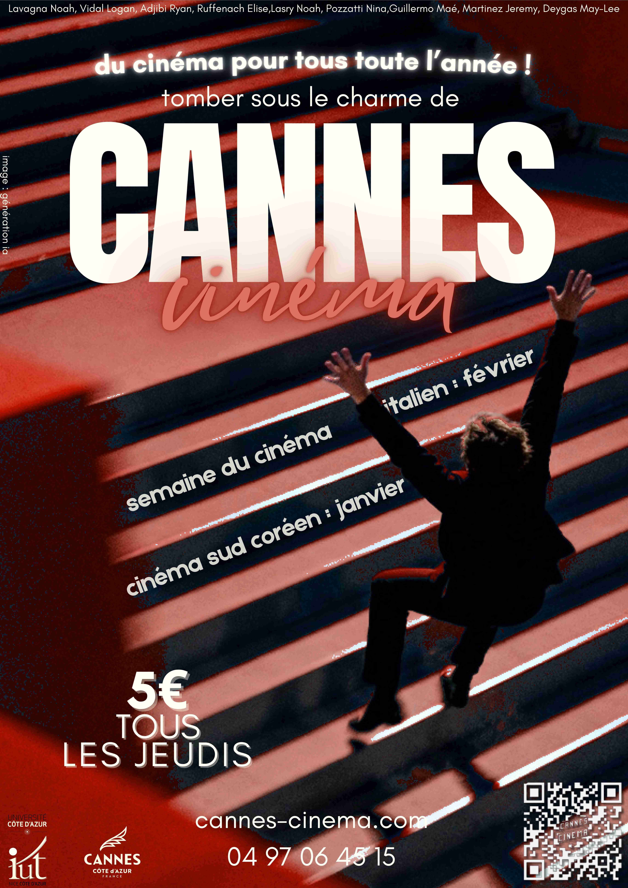
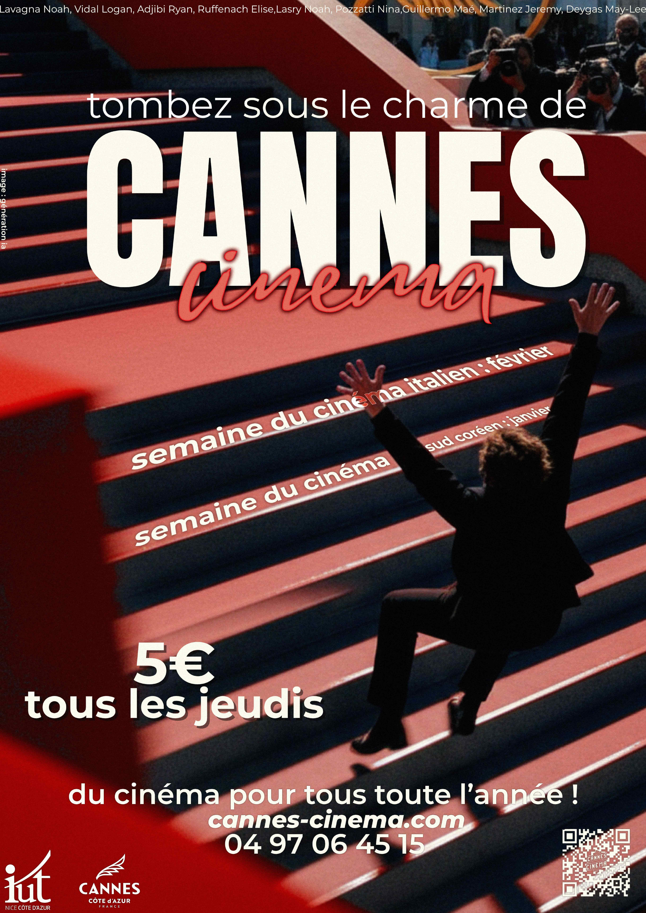
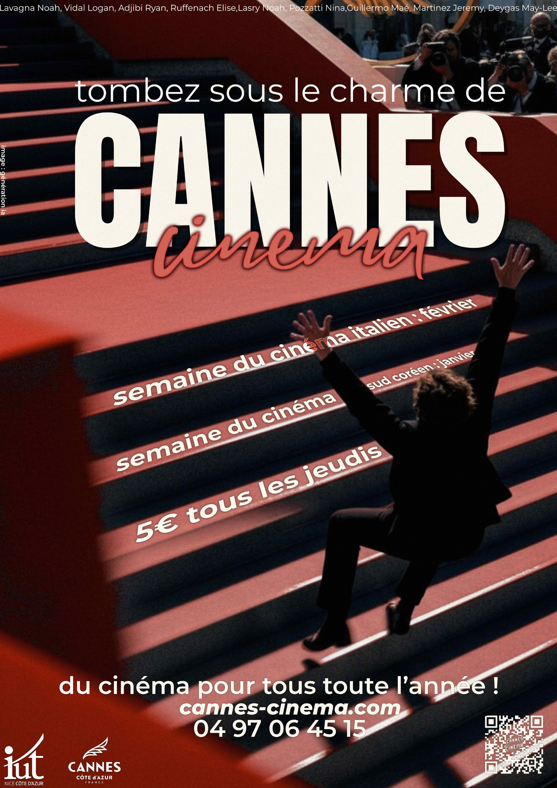
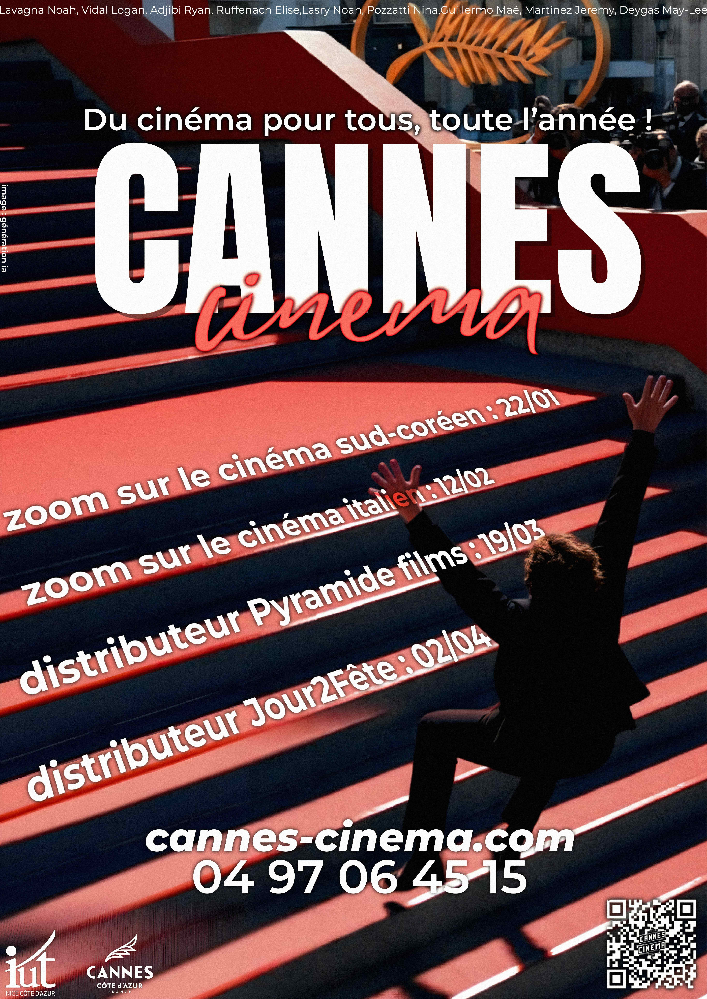
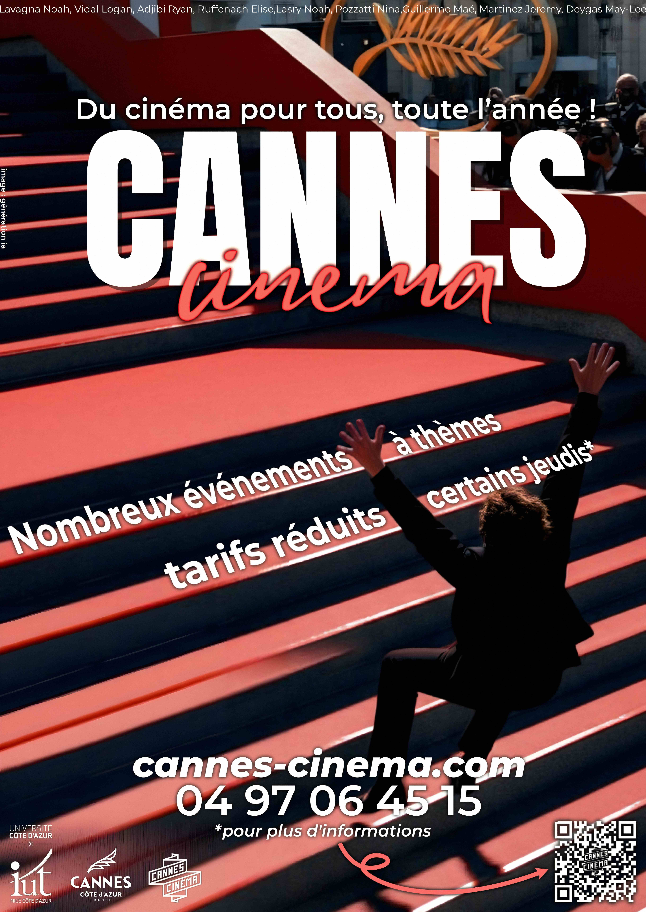
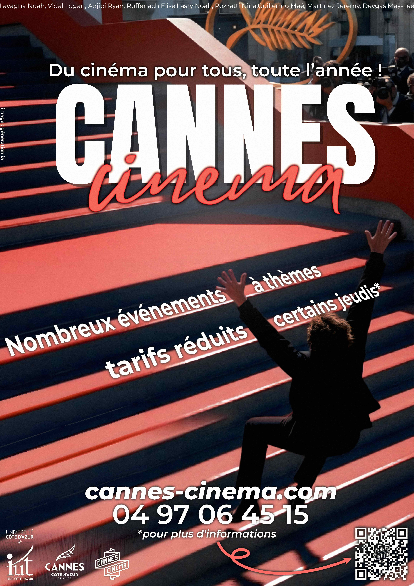

<!DOCTYPE html>
<html lang="fr">
<head>
  <meta charset="UTF-8">
  <meta name="viewport" content="width=device-width, initial-scale=1.0">
  <title>Cannes Cin&eacute;ma &mdash; Noah Lavagna</title>
  <meta name="description" content="SAE Communication : cr&eacute;ation d'une affiche publicitaire pour l'association Cannes Cin&eacute;ma. D&eacute;couvrez les diff&eacute;rentes versions et l'&eacute;volution du projet.">
  <meta property="og:type" content="website">
  <meta property="og:title" content="Cannes Cin&eacute;ma &mdash; Noah Lavagna">
  <meta property="og:description" content="Cr&eacute;ation d'une affiche publicitaire pour Cannes Cin&eacute;ma &mdash; 6 versions, du brouillon &agrave; la version finale.">
  <meta property="og:image" content="../../assets/images/og-preview.jpg">
  <meta property="og:locale" content="fr_FR">
  <link rel="icon" type="image/x-icon" href="../../favicon.ico">
  <link rel="icon" type="image/png" href="../../assets/images/favicon.png">
  <link rel="apple-touch-icon" href="../../assets/images/favicon.png">
  <link rel="stylesheet" href="../../style.css?v=26">
  <link rel="stylesheet" href="../../modern.css?v=29">
  <link rel="preconnect" href="https://fonts.googleapis.com">
  <link rel="preconnect" href="https://fonts.gstatic.com" crossorigin>
  <link href="https://fonts.googleapis.com/css2?family=Inter:wght@400;600;700;900&family=Space+Grotesk:wght@400;600;700&family=Fraunces:ital,opsz,wght@1,9..144,400;1,9..144,600&display=swap" rel="stylesheet">
  <script src="../../favicon-anim.js?v=1" defer></script>
  <link rel="dns-prefetch" href="https://unpkg.com">
  @1.1.13/dist/lenis.min.js" defer></script>
  <script>
    // Marque les navigations internes (modern.css skip les anims d'entrée → évite double-anim sous View Transition)
    try {
      if (document.referrer && new URL(document.referrer).origin === location.origin) {
        document.documentElement.classList.add('mp-internal-nav');
      }
    } catch (e) {}
  </script>
</head>
<body>
  <div class="grain-overlay" aria-hidden="true"></div>
  <div class="cursor-ring" aria-hidden="true"></div>
  <div class="cursor-dot" aria-hidden="true"></div>

  <!-- Navigation -->
  <nav class="nav">
    <a href="../../" class="nav-logo" aria-label="Accueil Noah Lavagna">
      <picture><source srcset="../../assets/images/noah.webp" type="image/webp"></picture>
    </a>
    <div class="nav-links">
      <a href="../../">Accueil</a>
      <div class="nav-dropdown"><a href="../../projets/" class="nav-active" data-nav-trigger>Projets <span class="nav-caret" aria-hidden="true">▾</span></a><div class="nav-dropdown-menu" role="menu"><a href="../../projets/" role="menuitem">Tous les projets</a><a href="../../projets/#cat-communication" role="menuitem">Communication</a><a href="../../projets/#cat-vente" role="menuitem">Vente</a></div></div>
      <a href="../../experiences/">Exp&eacute;riences</a>
      <a href="../../creations/">Cr&eacute;ations</a>
      <a href="../../#contact">Contact</a>
    </div>
    <button class="nav-toggle" aria-label="Menu">
      <span></span><span></span><span></span>
    </button>
  </nav>

  <div class="mobile-menu">
    <a href="../../">Accueil</a>
    <a href="../../projets/">Projets</a>
    <a href="../../projets/#cat-communication" class="mobile-sub">— Communication</a>
    <a href="../../projets/#cat-vente" class="mobile-sub">— Vente</a>
    <a href="../../experiences/">Exp&eacute;riences</a>
    <a href="../../creations/">Cr&eacute;ations</a>
    <a href="../../#contact">Contact</a>
  </div>

  <!-- Hero -->
  <section class="page-hero">
    <div class="container">
      <a href="../" class="back-link">
        <svg viewBox="0 0 24 24" fill="none" stroke="currentColor" stroke-width="2" width="18" height="18"><path d="M19 12H5M12 19l-7-7 7-7"/></svg>
        Retour aux projets
      </a>
      <div class="page-hero-label">01</div>
      <h1 class="page-hero-title">
        Cannes<br><span class="light">Cin&eacute;ma</span>
      </h1>
      <p class="page-hero-desc">SAE Communication &mdash; Cr&eacute;ation d'une affiche publicitaire pour l'association Cannes Cin&eacute;ma. Semestre 1, BUT TC.</p>
      <div class="page-hero-accent"></div>
    </div>
  </section>

  <!-- Contexte du projet -->
  <section class="section">
    <div class="container">
      <div class="section-label" data-reveal>Le projet</div>
      <div class="project-card" data-reveal>
        <div class="project-body">
          <div class="project-description">
            <p>Dans le cadre de la <strong>SAE Communication</strong> (premier semestre de BUT TC), notre groupe a &eacute;t&eacute; missionn&eacute; pour cr&eacute;er une <strong>affiche publicitaire</strong> destin&eacute;e &agrave; l'association <strong>Cannes Cin&eacute;ma</strong>. L'objectif : concevoir un visuel attractif pour promouvoir l'association aupr&egrave;s des &eacute;tudiants du Campus Georges M&eacute;li&egrave;s.</p>
            <p>Mon r&ocirc;le dans le groupe : <strong>responsable de la cr&eacute;ation graphique de l'affiche</strong>. C'est moi qui ai con&ccedil;u et r&eacute;alis&eacute; chaque version, du premier brouillon sur <strong>Canva</strong> jusqu'aux versions finales sur <strong>Affinity Designer</strong>. J'ai &eacute;galement particip&eacute; aux &eacute;changes avec l'op&eacute;rateur (l'association) pour adapter le visuel &agrave; leurs demandes.</p>
            <p>Ce projet a &eacute;t&eacute; un v&eacute;ritable exercice de <strong>patience et d'adaptation</strong> : entre les allers-retours avec l'association, la n&eacute;cessit&eacute; de concilier le cahier des charges universitaire et les attentes du client, et la production de <strong>6 versions successives</strong>, j'ai appris &agrave; g&eacute;rer un projet cr&eacute;atif dans des conditions r&eacute;elles.</p>
          </div>
          <div class="stage-skills">
            <div class="skill-item">
              <div class="skill-icon">
                <svg viewBox="0 0 24 24" fill="none" stroke="currentColor" stroke-width="2"><path d="M12 19l7-7 3 3-7 7-3-3z"/><path d="M18 13l-1.5-7.5L2 2l3.5 14.5L13 18l5-5z"/><path d="M2 2l7.586 7.586"/><circle cx="11" cy="11" r="2"/></svg>
              </div>
              <span>Affinity Designer</span>
            </div>
            <div class="skill-item">
              <div class="skill-icon">
                <svg viewBox="0 0 24 24" fill="none" stroke="currentColor" stroke-width="2"><rect x="3" y="3" width="18" height="18" rx="2" ry="2"/><circle cx="8.5" cy="8.5" r="1.5"/><polyline points="21 15 16 10 5 21"/></svg>
              </div>
              <span>Cr&eacute;ation graphique</span>
            </div>
            <div class="skill-item">
              <div class="skill-icon">
                <svg viewBox="0 0 24 24" fill="none" stroke="currentColor" stroke-width="2"><path d="M14 2H6a2 2 0 0 0-2 2v16a2 2 0 0 0 2 2h12a2 2 0 0 0 2-2V8z"/><polyline points="14 2 14 8 20 8"/></svg>
              </div>
              <span>Cahier des charges</span>
            </div>
            <div class="skill-item">
              <div class="skill-icon">
                <svg viewBox="0 0 24 24" fill="none" stroke="currentColor" stroke-width="2"><path d="M21 15a2 2 0 0 1-2 2H7l-4 4V5a2 2 0 0 1 2-2h14a2 2 0 0 1 2 2z"/></svg>
              </div>
              <span>Relation client</span>
            </div>
          </div>
        </div>
      </div>
    </div>
  </section>

  <!-- &Eacute;volution de l'affiche -->
  <section class="section" style="padding-top: 0;">
    <div class="container">
      <div class="section-label" data-reveal>&Eacute;volution de l'affiche</div>

      <!-- Version 1 -->
      <div class="project-card" data-reveal>
        <div class="project-header">
          <span class="project-number">V1</span>
          <h3 class="project-title">Premier jet &mdash; Affinity Designer</h3>
          <span class="project-type">Premi&egrave;re it&eacute;ration</span>
        </div>
        <div class="project-body">
          <div class="version-layout">
            <div class="version-poster">
              
            </div>
            <div class="project-description">
              <p>Premi&egrave;re version r&eacute;alis&eacute;e sur <strong>Affinity Designer</strong> apr&egrave;s un brouillon rapide sur Canva. J'ai choisi l'image embl&eacute;matique des <strong>marches rouges du Palais des Festivals</strong> avec un personnage en mouvement, pour cr&eacute;er une composition dynamique.</p>
              <p>Le texte est d&eacute;form&eacute; et plac&eacute; <strong>sur les marches de l'escalier</strong> pour un effet original de perspective. On retrouve le slogan &laquo;&nbsp;Tomber sous le charme de Cannes Cin&eacute;ma&nbsp;&raquo;, les &eacute;v&eacute;nements (cin&eacute;ma sud-cor&eacute;en, italien), le tarif &laquo;&nbsp;5&euro; tous les jeudis&nbsp;&raquo; et les informations de contact.</p>
              <div class="version-tags">
                <span class="version-tag"><svg viewBox="0 0 24 24" fill="none" stroke="currentColor" stroke-width="2" width="14" height="14"><path d="M12 19l7-7 3 3-7 7-3-3z"/><path d="M18 13l-1.5-7.5L2 2l3.5 14.5L13 18l5-5z"/><path d="M2 2l7.586 7.586"/><circle cx="11" cy="11" r="2"/></svg> Affinity Designer</span>
                <span class="version-tag"><svg viewBox="0 0 24 24" fill="none" stroke="currentColor" stroke-width="2" width="14" height="14"><rect x="3" y="3" width="18" height="18" rx="2" ry="2"/><circle cx="8.5" cy="8.5" r="1.5"/><polyline points="21 15 16 10 5 21"/></svg> Image IA</span>
                <span class="version-tag"><svg viewBox="0 0 24 24" fill="none" stroke="currentColor" stroke-width="2" width="14" height="14"><polyline points="4 7 4 4 20 4 20 7"/><line x1="9" y1="20" x2="15" y2="20"/><line x1="12" y1="4" x2="12" y2="20"/></svg> Typographie</span>
                <span class="version-tag"><svg viewBox="0 0 24 24" fill="none" stroke="currentColor" stroke-width="2" width="14" height="14"><path d="M21 16V8a2 2 0 0 0-1-1.73l-7-4a2 2 0 0 0-2 0l-7 4A2 2 0 0 0 3 8v8a2 2 0 0 0 1 1.73l7 4a2 2 0 0 0 2 0l7-4A2 2 0 0 0 21 16z"/></svg> Perspective</span>
              </div>
            </div>
          </div>
        </div>
      </div>

      <!-- Version 2 -->
      <div class="project-card" data-reveal>
        <div class="project-header">
          <span class="project-number">V2</span>
          <h3 class="project-title">Optimisation du texte</h3>
          <span class="project-type">It&eacute;ration graphique</span>
        </div>
        <div class="project-body">
          <div class="version-layout">
            <div class="version-poster">
              
            </div>
            <div class="project-description">
              <p>Am&eacute;lioration de la <strong>lisibilit&eacute; du texte</strong> sur les marches : les lignes &laquo;&nbsp;semaine du cin&eacute;ma italien : f&eacute;vrier&nbsp;&raquo; et &laquo;&nbsp;semaine du cin&eacute;ma sud cor&eacute;en : janvier&nbsp;&raquo; sont mieux espac&eacute;es. Le slogan passe &agrave; &laquo;&nbsp;Tombez sous le charme de&nbsp;&raquo; (conjugaison corrig&eacute;e).</p>
              <p>Le bloc &laquo;&nbsp;5&euro; tous les jeudis&nbsp;&raquo; et les informations de contact sont <strong>repositionn&eacute;s en bas</strong> pour une meilleure hi&eacute;rarchie visuelle. Le slogan secondaire &laquo;&nbsp;du cin&eacute;ma pour tous toute l'ann&eacute;e&nbsp;&raquo; est d&eacute;plac&eacute; en pied d'affiche.</p>
              <div class="version-tags">
                <span class="version-tag"><svg viewBox="0 0 24 24" fill="none" stroke="currentColor" stroke-width="2" width="14" height="14"><polyline points="4 7 4 4 20 4 20 7"/><line x1="9" y1="20" x2="15" y2="20"/><line x1="12" y1="4" x2="12" y2="20"/></svg> Lisibilit&eacute;</span>
                <span class="version-tag"><svg viewBox="0 0 24 24" fill="none" stroke="currentColor" stroke-width="2" width="14" height="14"><path d="M12 20V10M18 20V4M6 20v-4"/></svg> Hi&eacute;rarchie</span>
                <span class="version-tag"><svg viewBox="0 0 24 24" fill="none" stroke="currentColor" stroke-width="2" width="14" height="14"><path d="M21 16V8a2 2 0 0 0-1-1.73l-7-4a2 2 0 0 0-2 0l-7 4A2 2 0 0 0 3 8v8a2 2 0 0 0 1 1.73l7 4a2 2 0 0 0 2 0l7-4A2 2 0 0 0 21 16z"/></svg> Composition</span>
              </div>
            </div>
          </div>
        </div>
      </div>

      <!-- Version 3 -->
      <div class="project-card" data-reveal>
        <div class="project-header">
          <span class="project-number">V3</span>
          <h3 class="project-title">Ajustement de la composition</h3>
          <span class="project-type">It&eacute;ration graphique</span>
        </div>
        <div class="project-body">
          <div class="version-layout">
            <div class="version-poster">
              
            </div>
            <div class="project-description">
              <p>Affinement de la <strong>composition g&eacute;n&eacute;rale</strong>. Le bloc &laquo;&nbsp;5&euro; tous les jeudis&nbsp;&raquo; est int&eacute;gr&eacute; directement dans les marches pour renforcer l'effet de perspective. Les informations de contact sont regroup&eacute;es en bas de mani&egrave;re plus a&eacute;r&eacute;e.</p>
              <p>L&eacute;g&egrave;res <strong>corrections typographiques</strong> et meilleur &eacute;quilibre entre les zones de texte et l'image. Le rendu est plus coh&eacute;rent dans l'ensemble.</p>
              <div class="version-tags">
                <span class="version-tag"><svg viewBox="0 0 24 24" fill="none" stroke="currentColor" stroke-width="2" width="14" height="14"><polyline points="4 7 4 4 20 4 20 7"/><line x1="9" y1="20" x2="15" y2="20"/><line x1="12" y1="4" x2="12" y2="20"/></svg> Typographie</span>
                <span class="version-tag"><svg viewBox="0 0 24 24" fill="none" stroke="currentColor" stroke-width="2" width="14" height="14"><path d="M21 16V8a2 2 0 0 0-1-1.73l-7-4a2 2 0 0 0-2 0l-7 4A2 2 0 0 0 3 8v8a2 2 0 0 0 1 1.73l7 4a2 2 0 0 0 2 0l7-4A2 2 0 0 0 21 16z"/></svg> Perspective</span>
                <span class="version-tag"><svg viewBox="0 0 24 24" fill="none" stroke="currentColor" stroke-width="2" width="14" height="14"><rect x="3" y="3" width="7" height="7"/><rect x="14" y="3" width="7" height="7"/><rect x="14" y="14" width="7" height="7"/><rect x="3" y="14" width="7" height="7"/></svg> Mise en page</span>
              </div>
            </div>
          </div>
        </div>
      </div>

      <!-- Version 4 -->
      <div class="project-card" data-reveal>
        <div class="project-header">
          <span class="project-number">V4</span>
          <h3 class="project-title">Retour de l'op&eacute;rateur</h3>
          <span class="project-type">Apr&egrave;s &eacute;change avec l'association</span>
        </div>
        <div class="project-body">
          <div class="version-layout">
            <div class="version-poster">
              
            </div>
            <div class="project-description">
              <p>Suite aux premiers retours de l'association, des changements importants sont demand&eacute;s : remplacement du slogan par &laquo;&nbsp;Du cin&eacute;ma pour tous, toute l'ann&eacute;e !&nbsp;&raquo;, et ajout des <strong>&eacute;v&eacute;nements sp&eacute;cifiques avec dates</strong> (Zoom cin&eacute;ma sud-cor&eacute;en 22/01, cin&eacute;ma italien 12/02, distributeur Pyramide Films 19/03, Jour2F&ecirc;te 02/04).</p>
              <p>J'ai revu la <strong>structure de l'affiche</strong> pour int&eacute;grer toutes ces informations sur les marches, tout en conservant la lisibilit&eacute;. Le tarif &laquo;&nbsp;5&euro;&nbsp;&raquo; a &eacute;galement &eacute;t&eacute; retir&eacute; pour cette version.</p>
              <div class="version-tags">
                <span class="version-tag"><svg viewBox="0 0 24 24" fill="none" stroke="currentColor" stroke-width="2" width="14" height="14"><path d="M21 15a2 2 0 0 1-2 2H7l-4 4V5a2 2 0 0 1 2-2h14a2 2 0 0 1 2 2z"/></svg> Retour client</span>
                <span class="version-tag"><svg viewBox="0 0 24 24" fill="none" stroke="currentColor" stroke-width="2" width="14" height="14"><rect x="3" y="4" width="18" height="18" rx="2" ry="2"/><line x1="16" y1="2" x2="16" y2="6"/><line x1="8" y1="2" x2="8" y2="6"/><line x1="3" y1="10" x2="21" y2="10"/></svg> &Eacute;v&eacute;nements</span>
                <span class="version-tag"><svg viewBox="0 0 24 24" fill="none" stroke="currentColor" stroke-width="2" width="14" height="14"><polyline points="22 12 18 12 15 21 9 3 6 12 2 12"/></svg> Adaptation</span>
              </div>
            </div>
          </div>
        </div>
      </div>

      <!-- Version 5 -->
      <div class="project-card" data-reveal>
        <div class="project-header">
          <span class="project-number">V5</span>
          <h3 class="project-title">Simplification finale</h3>
          <span class="project-type">Derni&egrave;re version &laquo;&nbsp;escalier&nbsp;&raquo;</span>
        </div>
        <div class="project-body">
          <div class="version-layout">
            <div class="version-poster">
              
            </div>
            <div class="project-description">
              <p>Pour cette version, j'ai <strong>simplifi&eacute; l'affiche</strong> en rempla&ccedil;ant les &eacute;v&eacute;nements dat&eacute;s par des mentions plus g&eacute;n&eacute;rales : &laquo;&nbsp;Nombreux &eacute;v&eacute;nements &agrave; th&egrave;mes&nbsp;&raquo; et &laquo;&nbsp;Tarifs r&eacute;duits certains jeudis*&nbsp;&raquo;, pour un visuel plus a&eacute;r&eacute;.</p>
              <p>Le <strong>QR code</strong> est mis en valeur avec une mention &laquo;&nbsp;*pour plus d'informations&nbsp;&raquo;, et les logos partenaires (IUT C&ocirc;te d'Azur, Ville de Cannes) sont mieux int&eacute;gr&eacute;s. Cette version offre un <strong>&eacute;quilibre entre information et lisibilit&eacute;</strong>.</p>
              <div class="version-tags">
                <span class="version-tag"><svg viewBox="0 0 24 24" fill="none" stroke="currentColor" stroke-width="2" width="14" height="14"><path d="M13 2L3 14h9l-1 8 10-12h-9l1-8z"/></svg> Simplification</span>
                <span class="version-tag"><svg viewBox="0 0 24 24" fill="none" stroke="currentColor" stroke-width="2" width="14" height="14"><rect x="3" y="3" width="18" height="18" rx="2" ry="2"/><path d="M7 7h.01M7 12h.01M7 17h.01"/></svg> QR code</span>
                <span class="version-tag"><svg viewBox="0 0 24 24" fill="none" stroke="currentColor" stroke-width="2" width="14" height="14"><path d="M12 20V10M18 20V4M6 20v-4"/></svg> &Eacute;quilibre</span>
              </div>
            </div>
          </div>
        </div>
      </div>

      <!-- Version finale -->
      <div class="project-card" data-reveal>
        <div class="project-header">
          <span class="project-number">V6</span>
          <h3 class="project-title">Version finale</h3>
          <span class="project-type">Derni&egrave;re it&eacute;ration</span>
        </div>
        <div class="project-body">
          <div class="version-layout">
            <div class="version-poster">
              
            </div>
            <div class="project-description">
              <p>La derni&egrave;re version de l'affiche. Elle reprend la structure &eacute;pur&eacute;e de la V5 avec des ajustements sur le <strong>placement des logos</strong> et la hi&eacute;rarchie des informations.</p>
              <p>Le r&eacute;sultat est une affiche <strong>lisible, attrayante et professionnelle</strong> qui remplit son objectif de promotion. Ce parcours de 6 versions m'a appris &agrave; <strong>it&eacute;rer, &eacute;couter les retours</strong> et trouver le bon &eacute;quilibre entre ma vision cr&eacute;ative et les attentes du client.</p>
              <div class="version-tags">
                <span class="version-tag"><svg viewBox="0 0 24 24" fill="none" stroke="currentColor" stroke-width="2" width="14" height="14"><path d="M22 11.08V12a10 10 0 1 1-5.93-9.14"/><polyline points="22 4 12 14.01 9 11.01"/></svg> Version finale</span>
                <span class="version-tag"><svg viewBox="0 0 24 24" fill="none" stroke="currentColor" stroke-width="2" width="14" height="14"><path d="M1 12s4-8 11-8 11 8 11 8-4 8-11 8-11-8-11-8z"/><circle cx="12" cy="12" r="3"/></svg> Lisibilit&eacute;</span>
                <span class="version-tag"><svg viewBox="0 0 24 24" fill="none" stroke="currentColor" stroke-width="2" width="14" height="14"><path d="M12 19l7-7 3 3-7 7-3-3z"/><path d="M18 13l-1.5-7.5L2 2l3.5 14.5L13 18l5-5z"/><path d="M2 2l7.586 7.586"/><circle cx="11" cy="11" r="2"/></svg> Affinity Designer</span>
              </div>
            </div>
          </div>
        </div>
      </div>

    </div>
  </section>

  <!-- Bilan -->
  <section class="section" style="padding-top: 0;">
    <div class="container">
      <div class="section-label" data-reveal>Bilan</div>
      <div class="project-card" data-reveal>
        <div class="project-body">
          <div class="project-description">
            <p>Ce projet a &eacute;t&eacute; une exp&eacute;rience formatrice &agrave; plusieurs niveaux. En tant que <strong>cr&eacute;ateur de l'affiche</strong>, j'ai appris &agrave; concilier les exigences acad&eacute;miques et les attentes d'un client r&eacute;el, un exercice de <strong>gestion de projet et de communication</strong> tr&egrave;s concret.</p>
            <p>Les principaux d&eacute;fis : maintenir une <strong>coh&eacute;rence graphique</strong> &agrave; travers de multiples it&eacute;rations, s'adapter &agrave; des retours vari&eacute;s, et trouver le bon &eacute;quilibre entre <strong>cr&eacute;ativit&eacute; et contraintes</strong>.</p>
            <p>Au final, j'ai d&eacute;velopp&eacute; ma <strong>ma&icirc;trise d'Affinity Designer</strong>, appris &agrave; structurer un processus it&eacute;ratif de cr&eacute;ation, et compris l'importance de la <strong>documentation des &eacute;changes</strong> pour justifier ses choix lors d'une soutenance orale.</p>
          </div>
        </div>
      </div>
    </div>
  </section>

  <footer class="footer">
    <div class="container">
      <p>Noah Lavagna &copy; 2026</p>
    </div>
  </footer>

  <script src="../../page-transition.js?v=4" defer></script>
  <script src="../../vinyl-audio.js?v=3" defer></script>
  <script src="../../page.js?v=5" defer></script>
  <script src="../../modern.js?v=9" defer></script>
</body>
</html>
